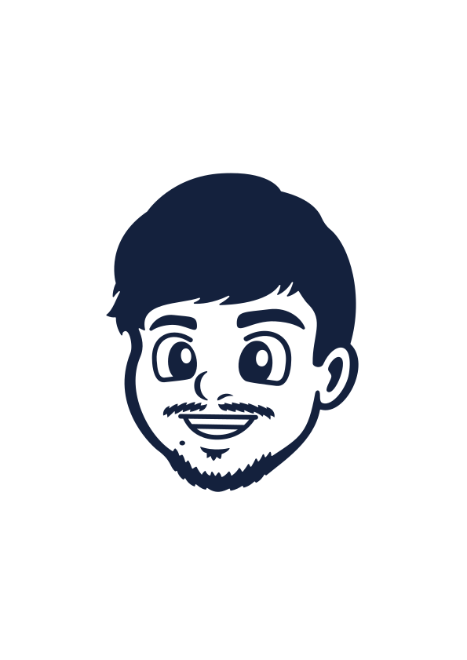
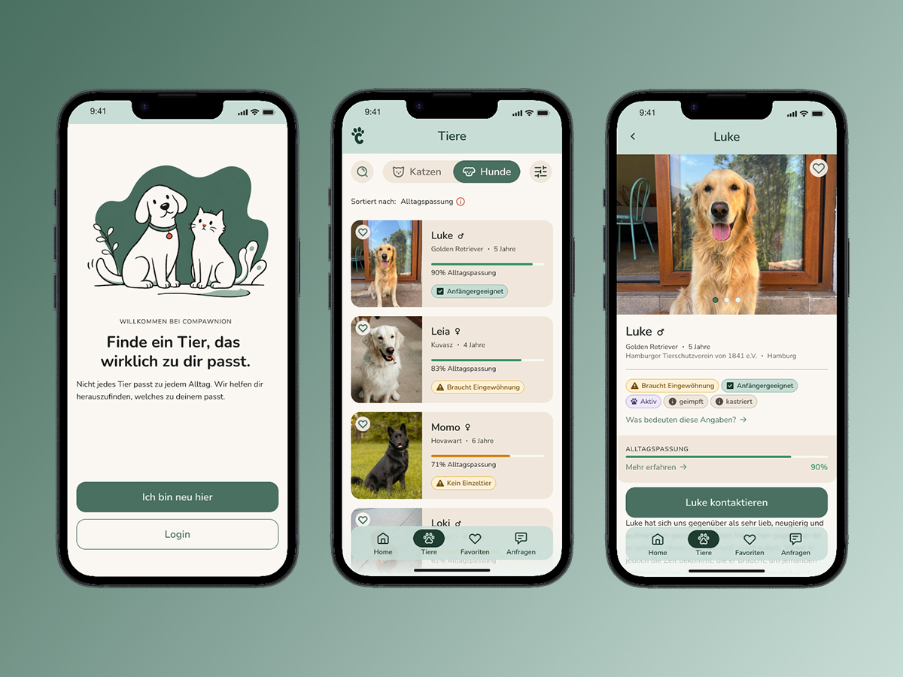

Hamburg-based Product Designer with a background as a Concept Creative in Live Communication. Now bringing that same storytelling logic to digital products, where complex problems need clear answers.
Recent work

Pet adoption that fits your life. A mobile app that helps first-time adopters find the right shelter animal by honestly mapping daily life before browsing.
AI themed Opening Show. Case study in writing.
Lidl @ UEFA EURO 2024. Case study in writing.
Celebrating EHF EURO 2024 with Culcha Candela. Case study in writing.
I spent several years as a Concept Creative in Live Communication, developing ideas and translating them into experiences for live audiences: events, hybrid formats, campaigns. The work was always about creating moments that stay with people. Interactions that feel intuitive. Experiences that leave something behind.
That’s what drew me to Product Design. Different medium, same question. How do you design something that feels right the moment someone encounters it?
When I’m not clicking around in Figma or testing the newest AI tools, I’m wandering around Hamburg with one of my analogue cameras.